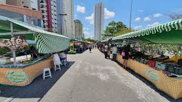

SOBRE
A Feira do Produtor é um evento popular em várias cidades do Brasil, onde pequenos agricultores e produtores locais podem vender diretamente ao público. Essas feiras são conhecidas por oferecerem uma ampla variedade de produtos frescos, como frutas, legumes, verduras, laticínios, carnes, pães, doces, conservas, artesanatos e muito mais.
A Feira do Produtor tem vários objetivos e benefícios:
- Promoção da Agricultura Local: Ajuda a sustentar a economia local ao proporcionar uma plataforma para os agricultores venderem seus produtos diretamente aos consumidores, eliminando intermediários e garantindo preços justos
- Produtos Frescos e de Qualidade: Os consumidores podem comprar alimentos frescos, muitas vezes colhidos no mesmo dia, garantindo uma melhor qualidade e sabor.
- Sustentabilidade: Ao promover a compra de produtos locais, a feira contribui para a redução da pegada de carbono associada ao transporte de alimentos de longas distâncias.
- Cultura e Comunidade: Esses eventos são também pontos de encontro comunitários onde as pessoas podem socializar, participar de atividades culturais e educacionais, e fortalecer os laços com seus vizinhos.
- Educação: Muitas feiras oferecem informações sobre práticas agrícolas sustentáveis e a importância de uma alimentação saudável.
A Feira do Produtor, seja em Peabiru ou em outras localidades, representa um compromisso com a sustentabilidade, a saúde e a economia local, promovendo um ambiente onde produtores e consumidores podem se beneficiar mutuamente.